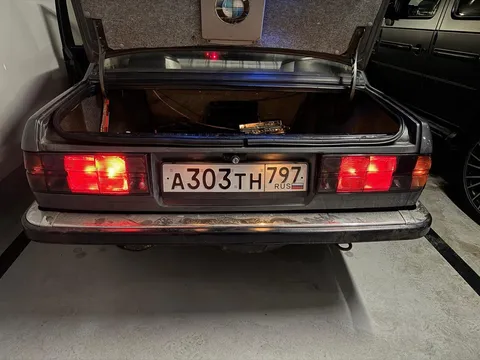
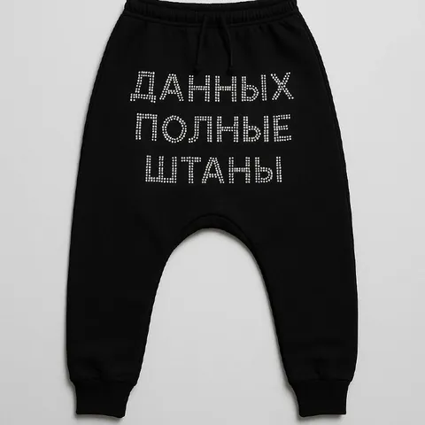
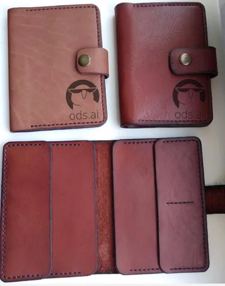
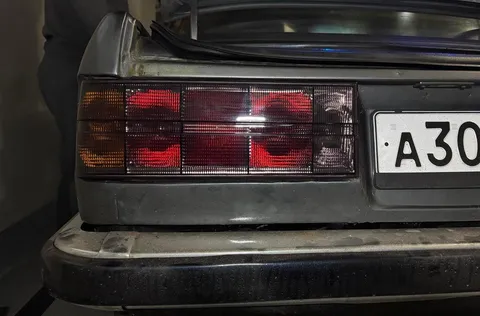

Очевидно, к 42-му году жизни автомобиля оптика уже изрядно уставшая. Мутная, выцветшая, морально устаревшая. К текущему моменту удалось заменить задние фонари. Новые - слегка затемненные, нарядные, яркие - благородно заняли свое место в задней панели без особых приключений. Хотя и тут не обошлось без подвохов.
Основная проблема заключалась в том, что прокладки между кузовом и фонарем, что были на старых фонарях, безнадежно дизассемблировались в пыль. А новые пришлось заказывать и две недели ждать. Зато, к моему удивлению, нашелся новый оригинал и за вменяемые деньги.
Также было подмечено, что работать из багажника (а фонарь крепится изнутри) легче Лехе. Мне скручиваться в три погибели было не с руки, а сыну там было вполне уютно. Да и для наживления мелких 8-мм гаечек его пальцы подходят лучше моих.
Результат - налицо. Точнее, на заднюю часть. Но все равно красиво. #лёха_строит_бэху
